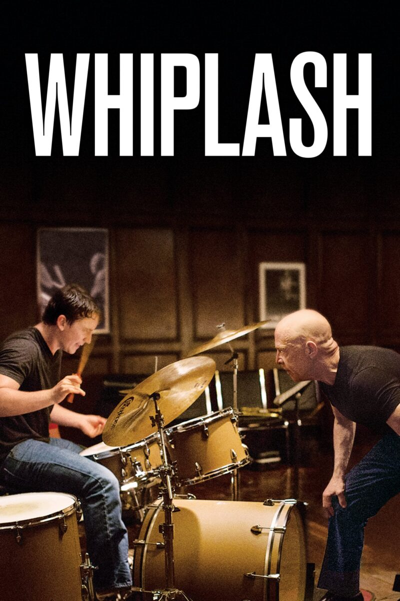
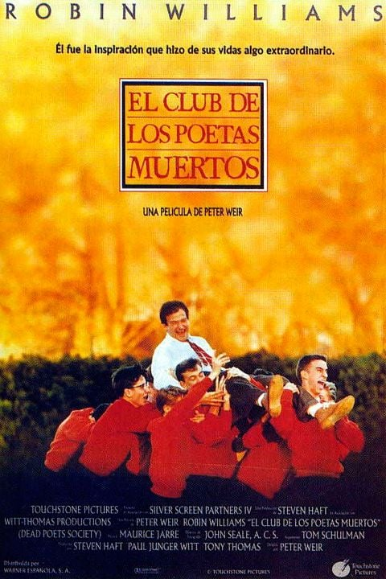
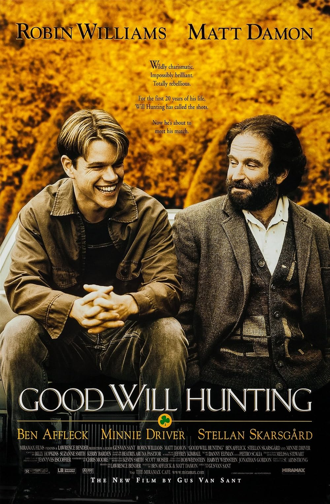

Un joven y prometedor baterista se inscribe en un conservatorio de música feroz donde sus sueños de grandeza son guiados por un instructor que no se detendrá ante nada para darse cuenta del potencial de un estudiante.

Dead Poets Society
Durante generaciones, los estudiantes de Welton Academy se prepararon para vivir vidas de conformidad y tradición, hasta que un nuevo profesor carismático, John Keating, los inspira a pensar por sí mismos, vivir la vida al máximo y carpe diem. Su enfoque poco convencional despierta los espíritus de los estudiantes y los inspira a hacer que sus vidas sean extraordinarias, pero pronto atrae la ira de un profesorado que lo desaprueba cuando una tragedia inesperada golpea la escuela.

Good will hunting
es un drama dirigido por Gus Van Sant. La película sigue a Will Hunting, un joven con un intelecto prodigioso pero que trabaja como conserje en el Instituto Tecnológico de Massachusetts. Descubierto por un profesor que nota su brillantez, Will lucha por superar su pasado traumático y sus inseguridades mientras es guiado por un terapeuta que lo ayuda a enfrentarse a sus emociones y a buscar un futuro mejor. Es una conmovedora historia de autodescubrimiento, redención y la importancia de las relaciones humanas.

Scareface
Protagonizada por Al Pacino, Caracortada sigue el ascenso y caída de Tony Montana, un emigrante cubano frío e implacable que logra salir de Cuba durante el éxodo de Mariel en 1980 para conseguir una mejor vida en Estados Unidos. Pero se encuentra en un campo de refugiados de Florida y debe lograr salir de ahí lo antes posible. Su buen amigo Manny Rivera tiene una salida para ellos: realizar un asesinato por contrato para que se hagan arreglos para poder entrar legalmente al país. Gracias a ese encargo, pronto están trabajando para el narcotraficante Frank López, pero Tony es impaciente y quiere mucho más, incluido el imperio de Frank y a su amante Elvira Hancock. Con la colaboración de su amigo, Manny inicia una carrera delictiva, como traficante de cocaína, con el objetivo de acceder al mundo de una organización de narcos. Sin embargo, una vez en la cima, será dificil para Tony no sucumbir a la codicia